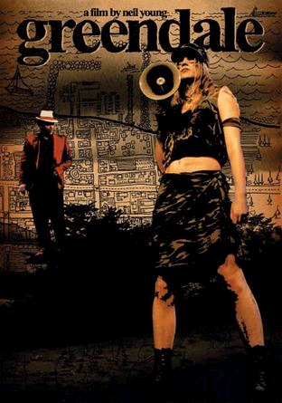
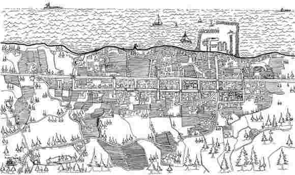

|
|
24. April 2006
Greendale (US 2003)
Neil Young verfilmt seine letzte Platte „Greendale“ und entwirft damit die Geschichte einer fiktiven Ortschaft im Norden Amerikas, die an eine Wiedergeburt der heilen Welt aus dem Geiste der Altersweisheit glaubt. Ein nicht uninteressantes Projekt, unterminiert durch einen allzu simplen Ansatz. Ein äußerst kurioser Kinobesuch.
Hinter dem Pseudonym des Regisseurs Bernard Shakey verbirgt sich kein Geringerer als der legendäre Rocksänger Neil Young. Er hat, so sagt er, diesen Namen gewählt, weil seine Hand ein wenig zittrig ist, wenn er die Kamera führt. Greendale ist ein handgefertigtes Homemovie, nach Neil Youngs eigenen Songs entstanden, und handelt von einem kleinen, vergessenen amerikanischen Dorf. Und von der ganzen Welt. Von George Bush, den schmutzigen Geschäften der großen Konzerne, der leichfertigen Zerstörung der Umwelt und von ein paar alten Männern, die auf ihrer Veranda sitzen und die Welt nicht mehr verstehen.
Mit seiner Super8-Kamera hat der 59-jährige Musiker die zehn Songs seiner gleichnamigen CD eigentlich ein Konzeptalbum mit Kurzgeschichten aus seiner fiktiven Modellstadt Greendale verfilmt, ohne Dialoge, nur mit seiner Musik und seinem Gesang, den er den Figuren in den Mund legt. (...) Young kritisiert die Medien, die Angst-Politik der Regierung von George W. Bush und die Raffgier der großen Konzerne auf eine Art und Weise, die plakativ zu nennen eine grobe Untertreibung wäre. Doch man lässt sich das gerne gefallen. Man bummelt mit im gemächlichen Rhythmus seiner Band Crazy Horse, man nimmt Anteil an seinen Geschichten aus einem Kaff, das vom Teufel höchstpersönlich besucht wird. Youngs Stimme, seine holpernden Songs und der Charme seiner wackligen, grobkörnigen Bilder transformieren das Simple in schlichte Kunst. «Ein bisschen Liebe und Zuneigung / in allem was du machst / und die Welt wird ein besserer Ort», singt Young. Das ist zweifellos kitschig doch der mit unendlicher Liebe und Hingabe gestaltete Film zeigt: Der Mann hat vielleicht doch Recht. (Thomas Allenbach, viennale)

"SPLENDID! A touch of Raymond Carver, a hint of Sherwood Anderson...
as full of crazy, honest life as anything Neil Young has done."
-- A.O. Scott, New York Times
"Vibrantly colorful... 'Greendale' is somewhere between the
true-believer sincerity of John Sayles and the oddball eeriness of
David Lynch."
-- Kevin Crust, Los Angeles Times
"Hauntingly memorable."
-- Elvis Mitchell, New York Times
"Wondrously eccentric."
-- A.O. Scott, New York Times
Neil Young's companion film to his concept album of the same name
is rendered in a grainy color 8mm silent film -- accompanied by the
music of the album. The hook is that while the cast acts out the
events of the songs, they lip sync to Young's vocals. The effect is at
once strange, startling and somewhat boring. The production values are
quite low, but the fidelity in image and setting is interestingly
contrasted within the editorial content of the film. The story
involves a family that is riven by violence and the gathering forces
of media and government that exploit it. Young uses this situation and
the bucolic town of "Greendale" to make an argument about the
evolution of American life, the march of conservative politics and
most particularly, the plight of the environment. After an hour of
watching what mostly feels like Young's home movies, bumbling and
blurry, he violently cuts to the razor sharp video images of the media
descending upon the town. It's easy to dismiss this film as cheaply
made and lazily conceived. But the film closes with the image of a
newly-politicized young couple driving to Alaska to "save the Caribou"
-- with the Devil hitching a ride. Young may be suggesting that in the
end the terrible forces that rain down on "Greendale" ascended from
there as well.
-- imdb user comment by bushleague
B+R+M: Bernard Shakey (= Neil Young), 87 min, eng.OF
19:30 Uhr, Space04 Kunsthaus Graz, 5€
Links: